| 缩略图 | 材质 id | 侧面贴图 | 顶面贴图 |
|---|
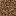 |
coarse_dirt |
minecraft:block/coarse_dirt |
（同侧面） |
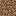 |
dirt |
minecraft:block/dirt |
（同侧面） |
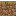 |
dirt_path |
minecraft:block/dirt_path_side |
minecraft:block/dirt_path_top |
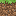 |
grass_block |
minecraft:block/grass_block_side |
minecraft:block/grass_block_top |
|
mud |
minecraft:block/mud |
（同侧面） |
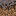 |
mycelium |
minecraft:block/mycelium_side |
minecraft:block/mycelium_top |
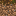 |
podzol |
minecraft:block/podzol_side |
minecraft:block/podzol_top |
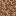 |
rooted_dirt |
minecraft:block/rooted_dirt |
（同侧面） |
| 缩略图 | 材质 id | 侧面贴图 | 顶面贴图 |
|---|
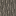 |
acacia_log |
minecraft:block/acacia_log |
minecraft:block/acacia_log_top |
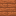 |
acacia_planks |
minecraft:block/acacia_planks |
（同侧面） |
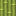 |
bamboo_block |
minecraft:block/bamboo_block |
minecraft:block/bamboo_block_top |
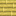 |
bamboo_planks |
minecraft:block/bamboo_planks |
（同侧面） |
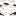 |
birch_log |
minecraft:block/birch_log |
minecraft:block/birch_log_top |
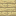 |
birch_planks |
minecraft:block/birch_planks |
（同侧面） |
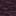 |
cherry_log |
minecraft:block/cherry_log |
minecraft:block/cherry_log_top |
|
cherry_planks |
minecraft:block/cherry_planks |
（同侧面） |
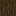 |
dark_oak_log |
minecraft:block/dark_oak_log |
minecraft:block/dark_oak_log_top |
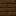 |
dark_oak_planks |
minecraft:block/dark_oak_planks |
（同侧面） |
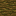 |
jungle_log |
minecraft:block/jungle_log |
minecraft:block/jungle_log_top |
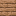 |
jungle_planks |
minecraft:block/jungle_planks |
（同侧面） |
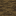 |
mangrove_log |
minecraft:block/mangrove_log |
minecraft:block/mangrove_log_top |
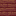 |
mangrove_planks |
minecraft:block/mangrove_planks |
（同侧面） |
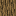 |
oak_log |
minecraft:block/oak_log |
minecraft:block/oak_log_top |
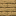 |
oak_planks |
minecraft:block/oak_planks |
（同侧面） |
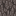 |
pale_oak_log |
minecraft:block/pale_oak_log |
minecraft:block/pale_oak_log_top |
|
pale_oak_planks |
minecraft:block/pale_oak_planks |
（同侧面） |
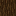 |
spruce_log |
minecraft:block/spruce_log |
minecraft:block/spruce_log_top |
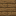 |
spruce_planks |
minecraft:block/spruce_planks |
（同侧面） |
 |
stripped_acacia_log |
minecraft:block/stripped_acacia_log |
minecraft:block/stripped_acacia_log_top |
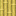 |
stripped_bamboo_block |
minecraft:block/stripped_bamboo_block |
minecraft:block/bamboo_block_top |
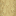 |
stripped_birch_log |
minecraft:block/stripped_birch_log |
minecraft:block/stripped_birch_log_top |
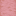 |
stripped_cherry_log |
minecraft:block/stripped_cherry_log |
minecraft:block/stripped_cherry_log_top |
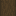 |
stripped_dark_oak_log |
minecraft:block/stripped_dark_oak_log |
minecraft:block/stripped_dark_oak_log_top |
 |
stripped_jungle_log |
minecraft:block/stripped_jungle_log |
minecraft:block/stripped_jungle_log_top |
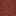 |
stripped_mangrove_log |
minecraft:block/stripped_mangrove_log |
minecraft:block/stripped_mangrove_log_top |
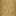 |
stripped_oak_log |
minecraft:block/stripped_oak_log |
minecraft:block/stripped_oak_log_top |
|
stripped_pale_oak_log |
minecraft:block/stripped_pale_oak_log |
minecraft:block/stripped_pale_oak_log_top |
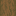 |
stripped_spruce_log |
minecraft:block/stripped_spruce_log |
minecraft:block/stripped_spruce_log_top |
| 缩略图 | 材质 id | 侧面贴图 | 顶面贴图 |
|---|
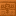 |
chiseled_red_sandstone |
minecraft:block/chiseled_red_sandstone |
（同侧面） |
|
chiseled_sandstone |
minecraft:block/chiseled_sandstone |
（同侧面） |
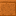 |
cut_red_sandstone |
minecraft:block/cut_red_sandstone |
（同侧面） |
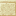 |
cut_sandstone |
minecraft:block/cut_sandstone |
（同侧面） |
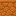 |
red_sandstone |
minecraft:block/red_sandstone |
minecraft:block/red_sandstone_top |
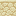 |
sandstone |
minecraft:block/sandstone |
minecraft:block/sandstone_top |
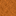 |
smooth_red_sandstone |
minecraft:block/red_sandstone_top |
（同侧面） |
|
smooth_sandstone |
minecraft:block/sandstone_top |
（同侧面） |
| 缩略图 | 材质 id | 侧面贴图 | 顶面贴图 |
|---|
|
crimson_hyphae |
minecraft:block/crimson_stem |
minecraft:block/crimson_stem_top |
|
crimson_planks |
minecraft:block/crimson_planks |
（同侧面） |
|
crimson_stem |
minecraft:block/crimson_stem |
minecraft:block/crimson_stem_top |
|
stripped_crimson_hyphae |
minecraft:block/stripped_crimson_stem |
minecraft:block/stripped_crimson_stem_top |
|
stripped_crimson_stem |
minecraft:block/stripped_crimson_stem |
minecraft:block/crimson_stem_top |
|
stripped_warped_hyphae |
minecraft:block/stripped_warped_stem |
minecraft:block/stripped_warped_stem_top |
|
stripped_warped_stem |
minecraft:block/stripped_warped_stem |
minecraft:block/warped_stem_top |
|
warped_hyphae |
minecraft:block/warped_stem |
minecraft:block/warped_stem_top |
|
warped_planks |
minecraft:block/warped_planks |
（同侧面） |
|
warped_stem |
minecraft:block/warped_stem |
minecraft:block/warped_stem_top |
| 缩略图 | 材质 id | 侧面贴图 | 顶面贴图 |
|---|
|
chiseled_nether_bricks |
minecraft:block/chiseled_nether_bricks |
（同侧面） |
|
chiseled_polished_blackstone |
minecraft:block/chiseled_polished_blackstone |
（同侧面） |
|
cracked_nether_bricks |
minecraft:block/cracked_nether_bricks |
（同侧面） |
|
cracked_polished_blackstone_bricks |
minecraft:block/cracked_polished_blackstone_bricks |
（同侧面） |
|
nether_bricks |
minecraft:block/nether_bricks |
（同侧面） |
|
polished_basalt |
minecraft:block/polished_basalt_side |
minecraft:block/polished_basalt_top |
|
polished_blackstone_bricks |
minecraft:block/polished_blackstone_bricks |
（同侧面） |
|
red_nether_bricks |
minecraft:block/red_nether_bricks |
（同侧面） |
|
smooth_basalt |
minecraft:block/smooth_basalt |
（同侧面） |
| 缩略图 | 材质 id | 侧面贴图 | 顶面贴图 |
|---|
|
chiseled_copper |
minecraft:block/chiseled_copper |
（同侧面） |
|
chiseled_tuff |
minecraft:block/chiseled_tuff |
minecraft:block/chiseled_tuff_top |
|
chiseled_tuff_bricks |
minecraft:block/chiseled_tuff_bricks |
minecraft:block/chiseled_tuff_bricks_top |
|
copper_block |
minecraft:block/copper_block |
（同侧面） |
|
cut_copper |
minecraft:block/cut_copper |
（同侧面） |
|
exposed_chiseled_copper |
minecraft:block/exposed_chiseled_copper |
（同侧面） |
|
exposed_copper |
minecraft:block/exposed_copper |
（同侧面） |
|
exposed_cut_copper |
minecraft:block/exposed_cut_copper |
（同侧面） |
|
oxidized_copper |
minecraft:block/oxidized_copper |
（同侧面） |
|
oxidized_cut_copper |
minecraft:block/oxidized_cut_copper |
（同侧面） |
|
waxed_oxidized_copper |
minecraft:block/oxidized_copper |
（同侧面） |
|
weathered_copper |
minecraft:block/weathered_copper |
（同侧面） |
|
weathered_cut_copper |
minecraft:block/weathered_cut_copper |
（同侧面） |
| 缩略图 | 材质 id | 侧面贴图 | 顶面贴图 |
|---|
|
deepslate_bricks |
minecraft:block/deepslate_bricks |
（同侧面） |
|
mud_bricks |
minecraft:block/mud_bricks |
（同侧面） |
|
packed_mud |
minecraft:block/packed_mud |
（同侧面） |
|
polished_andesite |
minecraft:block/polished_andesite |
（同侧面） |
|
polished_diorite |
minecraft:block/polished_diorite |
（同侧面） |
|
polished_granite |
minecraft:block/polished_granite |
（同侧面） |
|
polished_tuff |
minecraft:block/polished_tuff |
（同侧面） |
|
smooth_stone |
minecraft:block/smooth_stone |
（同侧面） |
 |
stone_bricks |
minecraft:block/stone_bricks |
（同侧面） |
|
tuff_bricks |
minecraft:block/tuff_bricks |
（同侧面） |